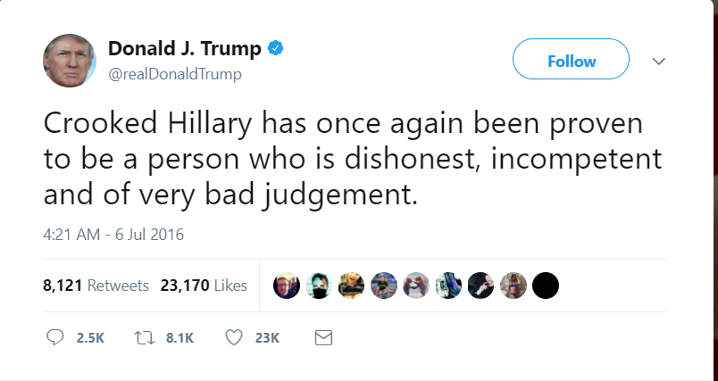

You are being watched!

Social media has become omnipresent and we (un)intentionally leave increasingly more information about ourselves: our opinions, habits, interests and beliefs.
The president of the United States is famous for being an avid Twitter user. He is swift to express his opinion directly in a sometimes very raw manner.
This habit of regular commenting on events and persons is a good opportunity to ask: what insights can we gather from 140 characters of typed by POTUS?
Why POTUS Tweets?
The President of the United States is a person with great power and control over the events in the world. He is a representative of the state which is one of the major players in world stability: peace, economy, science and developmet among others.

With great power comes great responsibility, as the president should represent a role model for the nation, while being under constant scrutiny of public and media. Donald Trump's Twitter feed represents an unique insight into mindset and opinions of a leader of a nation and a successful businessman. Without hesitation and careful diplomatic consideration he is posting his opinions freely. In that freedom we also find inspiration to explore what might he reveal about himself and find out more about @realDonaldTrump.
Data has it all
What we publish on the Web does not disappear. This is a very important consequence for social media and our online presence. Even if we seemingly delete an unfortunate image or post, chance is, it is still stored somewhere. This is emphasized to the extremes in cases of celebrities and people of power, such as Donald Trump. Here we see a famous gaffe: a late night "covfefe" tweet. He has deleted the Tweet afterwards, but it was already too late - everyone was talking about it.
In a similar fashion, Tweets are directly accessible to the public. Our opinions from many years, or a late night rant or drunken post - it is saved somewhere. This is only one example of information we leave online: interactions, logs, likes and different metadata is also present to represent our online identity.
We will use the public availability of Donald Trump tweets to gather some insights on his use of Twitter, his habits, reactions and sentiment throughout the years. Moreover, we will look from different approaches his reactions to the news articles about him or his cabinet in the White House.
Who posts from @realDonaldTrump
Donald Trump is a businessman, celebrity, media personality and a president. From the emergence of his Twitter account in 2009. he has posted many tweets, but it is certain that he has social media managers for elements of his media presence.
The majority of the tweets were posted from Android, which is a device of choice for mr. Trump. We can see other utilities, such as iPhone or Web Client being prominent as well. Since Donald Trump has been noted to rarely use computers we can for now assume the posts he made are originating from Android. That is a significant amount of Tweets that are approved, but not directly penned by Donald Trump.
Since becoming POTUS, many concerns were raised for using an insecure Android device. Thus, Trump has switched to iPhone. This is visible from the Twitter data as well: the last Tweet posted from Android is on 25th of March, 2017, keeping his promise of using a more secure device. Seeing that iPhone has been used before as well in parallel, it could be either his social media maganers or himself.
User engagement
How did becoming a POTUS change the landscape of interaction of users with his Tweets? Let us find out! We count favoriting a tweet and retweeting different metrics of level of interaction.
It is evident that since declaring candidacy on June 16th, 2015, his Twitter account has seen a steady increase in interactions - signs of undergoing campaign and supporters flowing in. A sharp peak can be seen in November 2016 - exactly when the US presidential elections that Trump won took place.
Comparing the devices used to post: Android and iPhone, we can observe slight differences.
If we consider Trump using his Android phone until March (when there is a halt from that device), iPhone has been used
presumably by his social media and campaing managers to promote him as a candidate.
In general more popular tweets have come from Donald Trump himself, notable popular examples suggest presidential victory.
and inauguration as important events, besides other peaks that can be observed.
After March 2017, it is more difficult to track the author
solely by relying on the presumption of the device used.
In the news: Trump and his Administration
Being a public persona, businessman and politician has enabled Trump to leave his mark on the news:
interviews, reports and a variety of press coverage.
We can gain an insight on what has Trump opinionated on strongly enough that it has managed to reach the news.
From businessman and a TV personality to politician and president - we can gain insights on interests and critique
of Donald Trump and his closest associates. This can also give an insight on his political agenda, as well as
shed light on issues that either trouble his presidency or he actively tackles.
News topics over the years
A historical insight shows the best the evolution of interests of Donald Trump, reflected in the news. From 2009 when the data has been first collected, we can observe that number of topics has been growing over time: Donald Trump engaging more into public life besides entertainment. Likewise, the variety of topics is increasing as well, - close with his political or personal agenda.
What is this administration about?
News cover not only the statements of politicians, but also provides a critique and other reports in connection to them.
One such example is the Russian-ties investigation
or some legal issues that have been brought up.
We show the top 20 topics in the news that have appeared since Donald Trump taking office in 2017.
We can see the political agenda clearly: immigrants and homeland security being the first topic, while crime and Russia also take a significant place in the distribution of the news topics.
What is in the news on certain tweet topics?
Since his Twitter feed is a free outlet of his thoughts and opinions, we are interested if we can observe certain trends
in reaction to the topics of the news. Social media and social herding has a very powerful effect Trump must be aware of,
can we observe if he uses his online voice to strengthen his position among his followers and create a context that
is different from the news reports.
We will look into what topics are in the news when he tweets about certain topics: hashtags, mentions or simply parts of tweets
that containt a defined phrase.
Fake news?
Fake news has become an infamous term used by Donald Trump frequently to discard news and lable media outlets as "fake". These reactions are usually to news coverage that is not benevolent towards policies and critique his stances and appriaches. We can notice that "fake news" has emerged since end of 2016 - just about when he was to take the office as POTUS. The frequency has been relatively spread out, with certain significant mentions from the news appearing on the days with most frequent "fake news" tweets:
- September 30th 2017 - criticism on Puerto Rican hurricane response and Alabama preliminaries.
- August 7th 2017 - 200 days of Trump Administration
- May 28th 2017 - Montana special Congressional race
After we have localized the tweets containing "fake news" as a topic, we will show what topics in the news occur in the immediate time period of 1 day after publishing such tweets.
To see whether the news topic has been significant, we will also check all the news topics 5 days after the publishing of the "fake news" tweets, in practical terms - what is the more average distribution of news in that period.
From this naive approach, we can pair up the news from 1 and 5 day intervals - to try to filter out the regular news
that might not be targeted by his tweets. With this approach no formal conclusions can be made.
Another "intuitive" but thus possibly wrong conclusion might be that unmatched long term topics are actually targeted
by such tweets, in this case: Ethics, Military, Climate Change, Foreign Policy and Environment.
We do not have the expertise to test the hypothesis in such settings (news and social sciences). One of the presumptions
and hypotheses could be that he is using "fake news" to diminish the effect of certain topics and media outlets by targeting
them on purpose. However, we did not test this hypothesis yet.
And his opponent "Crooked" Hillary?
What does appear in the news when Hillary Clinton, his political oponent, is mentioned. Having very strongly expressed
his opinions of Hillary, along with calls for her imprisonment, can mentioning her be a scapegoat for some burning issues for Trump?
We can see especially numerous mentions during the campaign, peaking just before the elections, then significantly dropping in frequency.
Long term unpaired topics are: Campaign Finance, Transparency, Legal Issues and Criminal Justice.
Short term unpaired topics are: Campaign and Ethics.
Without hypothesis test we cannot conclude the significance, but it is peculiar how those topics relate closely
to his agenda about Hillary Clinton.
What about his predecessor, Barack Obama?
Barack Obama is the previous president of the United States. He has been called out by Trump directly on many occasions, infamously
for requests to see his birth certificate to confirm he is a citizen of the USA.
Over the time we can see a very dense distribution of "obama" mentions in the tweets, noticably peaking just before the election night.
In general, he calls him out regularly even after the elections.
Unmatched short term and long term news topics are more prominent here.
- Short term news topics (1 day after the tweet): Campaign Finance, Congress and Veterans.
- Long term news topics (5 days after the tweet): Environment, Trade, Civil Rights and Clinton Emails.
What is in the tweets on certain news topics?
We want to show the opposite now, when selected news topics are aired, what topics are in the Trump's Twitter feed.
This might provide a more detailed insight on what he tweets about, whom he mentions or tags.
Without certainty and formal testing, we presume that such behavior might be about deflecting and diminishing certain topics,
by mentioning provocative topics, calling out his opponents or asserting patriotism.
In news: Russia and FBI
We explore one especially unpleasant set of topics for Donald Trump: Russia and FBI. Displayed are the news occurences over time containing either of two terms.
We display the occurrence of two topics from the tweets appearing up to 2 days after the news airing:
- Mention: CNN
- Hashtag: MAGA (Make America Great Again)
MAGA, CNN - easy response?
Trend of reaction, peculiarity?
We put some of the highest occurrences of tweet topics in context with the news on topics of Russia and FBI as topics:
- Mentions: CNN, DRUDGE_REPORT (Drudge report is an American conservative right-wing news aggregation website)
- Hashtags: MAGA, MakeAmericaGreatAgain
We can observe that after significant number of news topics with Russia, CNN or MAGA is mentioned.
Our presumption is that these responses might be to discredit the news outlets, while enforcing high level of patriotism
in contrast to Russian implications - in order to diminish the importance of the news.
More apparently with FBI news topic, there is a sudden spike in CNN and DRUDGE_REPORT mentions, showing that Trump reacts
directly by referencing right-wing news aggregation website along with CNN.
In order to make direct conclusions, we would have to consult pshycologicsts, news analysts, politicologists and experts in
social media and social sciences to provide a definite conclusion. Based on the data, we show the peculiarities we have observed, along
with our presumptions. It is an insight - not a ground truth or hypothesis.